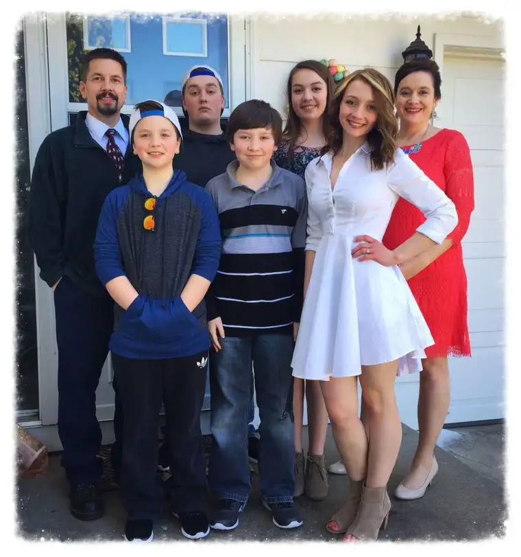

Note: Today marks the 48th anniversary of the life-changing document, “Humanae Vitae,” a true gift to the Church. The following is my contribution to a one-day media event by the Couple to Couple League to spread the word about the beauty of this papal encyclical issued by Pope Paul VI in 1968, the year of my birth! I’m honored to join an amazing slate of writers and religious leaders today, including Cardinal Dolan, Archbishop Chaput and Sister Helena Burns, whose original writings, along with my own, will congregate today at https://ccli.org/blog/.
Humanae Vitae lived out: The beauty of the vision, our children, the Sacraments brought us here
“Self-discipline of this kind is a shining witness to the chastity of husband and wife and, far from being a hindrance to their love of one another, transforms it by giving it a more truly human character. And if this self-discipline does demand that they persevere in their purpose and efforts, it has at the same time the salutary effect of enabling husband and wife to develop to their personalities and to be enriched with spiritual blessings. For it brings to family life abundant fruits of tranquility and peace.” – Pope Paul VI, Humanae Vitae, July 25, 1968
When I first read these words, and others surrounding them in the encyclical penned by Pope Paul VI, the promise of tranquility and peace drew me in. But were they really possible?
My husband and I had been introduced to Natural Family Planning (NFP) during our Engagement Encounter, and while intrigued, I didn’t think it would be practical for us. Troy, a Protestant at the time, had already agreed to be married in the Catholic Church. How much more could I expect of him?
It would take prayer, the birth of our first child, and Kimberly Hahn’s “Live-Giving Love,” to convince me that NFP was not only a worthy pursuit, but one that, with a now-enlivened conscience, we were obliged to follow.
And so our NFP journey began, along with more children, and a miscarriage in the middle of it all. Still, year by year, and moment by moment – some more uncertain than others – we’ve carried out this vision that our Church, our God, has gifted to us.

Standing here now at almost 48, and with five children who are quickly matching and even exceeding us in size and intelligence, I can see better what ultimately won us over, and kept us tethered to the vision.
In a word: beauty.
- The beauty of the vision itself. Human Vitae and its guiding principles move the human heart. Reading it with an openness, one becomes convinced this vision has been fashioned in a place outside of time and space, and from the center of love – for love and by love.
- The beauty of our children. Who can argue the physical manifestation of this teaching? A child is born – a physically embodied soul that never before existed – because of our openness to God’s will and love for each other. It is inconceivable now to think of the possibility of having shut that door, and all that would have been shut out with it – the joys and even the hardships. Through them, we realize anew, every day, how much we need God, and each child more expands this realization exponentially.
- The beauty of the sacraments. If not for Reconciliation, if not for the Eucharist, our initial reluctance would likely remain. The grace we are still only beginning to comprehend, which comes with partaking in the life of the Church, and the Sacraments in particular, can be the only explanation for why we’ve persisted. Owing all to God and his Church, we find that our children, our marriage, become an offering back to him, and hopefully a light to others.
Despite the challenges of living out this grace-filled commission in a world opposed to a sacrificial mindset, the effort equates to the blessings of a clear and grateful conscience, and when it comes to our family planning, no regrets.
Find more at:
- Facebook: https://www.facebook.com/The-Couple-to-Couple-League-Natural-Family-Planning-211105765697/
- Twitter: https://twitter.com/coupletocouple/
- The soon-to-launch Instagram account: https://www.instagram.com/coupletocoupleleague/
- Couple the Couple League website: https://ccli.org/
- Living the Love (CCL) blog: https://ccli.org/blog/
- And the document itself: http://w2.vatican.va/content/paul-vi/en/encyclicals/documents/hf_p-vi_enc_25071968_humanae-vitae.html
To contribute to the cause of spreading the good news of NFP, visit the Humanae Vitae Giving Day button: https://ccli.org/do-more/donate/
Please help spread the word about this one-day celebration by using the hashtags #joyfulmarriage and #humanaevitae
Roxane B. Salonen, a wife and mother of five from Fargo, ND, is an awarding-winning children’s author, freelance writer and newspaper columnist. Also a Catholic radio host and speaker, Roxane blogs on faith and family at Peace Garden Passage, and on Catholicmom.com. She is the co-author of “Redeemed by Grace: A Catholic Woman’s Journey to Planned Parenthood and Back”(Ignatius Press) and a contributing writer for the forthcoming (August 2016) “The Catholic Mom’s Prayer Companion: A Book of Daily Reflections” (Catholicmom.com).